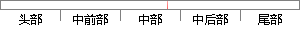

该模型以生存结局和生存时间为因变量，可同时分析众多因素对生存期的影响，能分析带有截尾生存时间的资料，且不要求估计资料的生存分布类型。
片段位置图

相似结果|
1
原句片段：该模型以生存结局和生存时间为因变量，可同时分析众多因素对生存期的影响，能分析带有截尾生存时间的资料，且不要求估计资料的生存分布类型。
相似片段 1：该模型以生存结局和生存时间为应变量,可同时分析众多因素对生存期的影响,能分析带有截尾生存时间的资料,且不要求估计资料的生存分布类型。由于上述优良性质,该模型自...
相似片段 2：该模型是一种多因素的生存分析方法,可以分析带有截尾生存时间的资料,同时分析众多因素对生存期的影响,且不要求估计资料的生存函数的分布类型。用SAS分析膀胱癌手术后...
相似片段 3：? Cox 模型以生存结局和生存时间为因变量,可 同时分析众多因素对生存期的影响,分析带有删失数据的资料,且不要求资料服从特定的分 布类型。 ? ? Cox模型主要用于...
相似片段 4：Cox 模型以生存结局和生存时间为因变量,可同时 分析众多因素对生存期的影响,分析带有删失数据 的资料,且不要求资料服从特定的分布类型; ? 主要用于研究多个影响...
相似片段 5：基于半参数Cox 回归模型的预测 半参数 Cox 回归模型以生存结局和生存时间为因变量, 同时分析众多因素对生存期的影响,分析带有删失生存时间的 资料, 且不要求资料...
相似片段 6：该模型以生存结局和生存时间为因变量Y 可同时分析众多因素对生存期的影响 分析带有删失生存时间 不要求生存时间的分布类型。 3819.4 Cox模型一、Cox...
相似片段 7：对生存资料的多因素分析最常用的方法是Cox比例风险回归模型,简称Cox模型,该模型以生存结局和生存时间为因变量,能够同时分析众多因素对生存期的影响,分析...
相似片段 8：COX 回归模型主要用于肿瘤和其它慢性病的预后分析,也可用于队列研究的病因 探索。该模型以生存结局和生存时间为因变量,可同时分析众多因素对生存期的影响, 分析带有...
相似片段 9：回归模型以生存结局和生存时间为因变量,可同 时分析众多因素对生存期的影响,...案例带有缺失值的案例 带有负时间的案例 层中的最早事件之 前删失的案例 合计...
|
※ 片段修改建议 ※
近似词参考：- 模型：模子
- 生存：保存 糊口生涯 生活 生计
- 结局：终局 了局
- 生存：保存 糊口生涯 生活 生计
- 时间：时候
- 分析：阐发 阐明 剖析
- 众多：浩繁 浩瀚
- 因素：身分
- 分析：阐发 阐明 剖析
- 生存：保存 糊口生涯 生活 生计
- 时间：时候
- 要求：请求
- 估计：估量 预计
- 生存：保存 糊口生涯 生活 生计
- 分布：散布 漫衍
- 类型：范例
系统自动生成语句：该模子以保存终局和保存时候为因变量，可同时阐发浩繁身分对保存期的影响，能阐发带有截尾保存时候的资料，且不请求估量资料的保存散布范例。
注：本片段修改建议为系统自动生成，仅供参考。